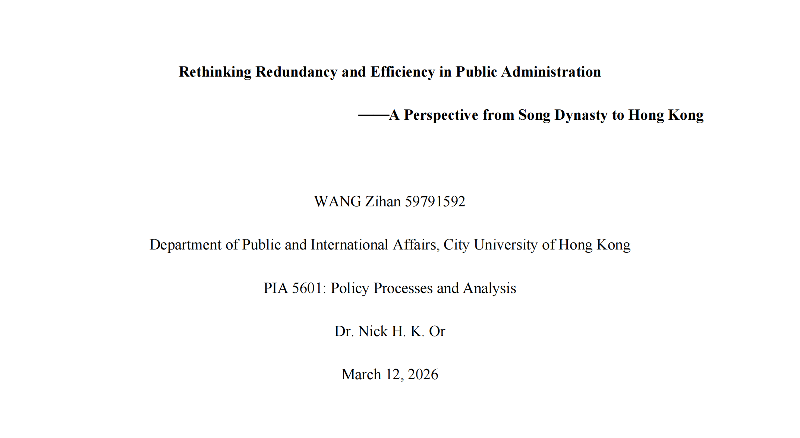

公共组织冗余设计研究
学术研究 | 文献综述 | 理论分析

项目背景
公共组织中的冗余设计是组织理论中的重要议题，涉及资源配置效率、风险应对能力与组织稳定性之间的平衡。深入研究该议题，有助于理解现代公共管理中组织设计的复杂性与科学性。
我的工作
独立开展课题研究，自主设计研究框架，系统梳理公共组织冗余设计的理论脉络。通过全面检索国内外核心期刊文献，深入分析冗余设计的概念内涵、类型划分及其在公共部门中的表现形式，构建了完整的文献综述体系。研究过程中展现了较强的学术素养、批判性思维和独立研究能力。
项目成果
- 完成系统性的文献综述，全面梳理公共组织冗余设计的理论发展脉络
- 深入分析了冗余设计对公共组织绩效、创新能力与适应性的多重影响机制
- 提炼出公共部门冗余管理的核心观点，为后续实证研究奠定理论基础
- 提升了学术写作能力、文献检索能力与理论分析能力
研究思路
基于公共管理与组织理论视角，采用文献研究法，系统检索中英文核心期刊文献，从概念界定、类型划分、影响机制、测量方法等多个维度展开深入分析。通过比较公共部门与企业组织的差异性，揭示公共组织冗余设计的独特特征与实践启示，为公共管理领域的组织优化提供理论参考。
联系方式
邮箱：Zihan1927@Outlook.com
电话：+86-156-5537-9189/+852-4490-8056
微信：asakawa2134020115